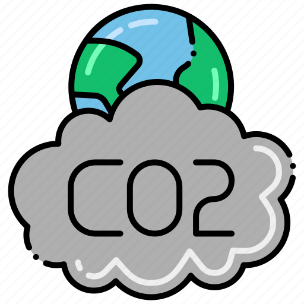

Objetivo de Desenvolvimento Sustentável 7 (ODS-7): Helicópteros movidos a energia solar
Benefícios e Redução de Carbono
Os helicópteros movidos a energia solar representam uma inovação significativa na indústria da aviação Eles utilizam a energia do sol para alimentar seus motores, o que reduz significativamente a dependência de combustíveis fósseis e, consequentemente, as emissões de carbono. Isso contribui para a redução do impacto ambiental e para a sustentabilidade do setor aeroespacial.
Além disso, os helicópteros movidos a energia solar também oferecem outros benefícios. Por exemplo, eles são mais silenciosos em comparação com helicópteros tradicionais, o que reduz a poluição sonora e o impacto nas áreas urbanas. Além disso, a utilização de energia solar como fonte de energia é mais econômica a longo prazo, uma vez que os custos de combustível são reduzidos ou eliminados.
Essa inovação na indústria da aviação é um exemplo de como a tecnologia pode ser utilizada para promover a sustentabilidade e reduzir o impacto ambiental. À medida que mais avanços são feitos nesse campo, podemos esperar ver uma maior adoção de helicópteros movidos a energia solar e outros meios de transporte aéreo mais sustentáveis.

Redução de emissões de carbono
A energia solar é uma fonte limpa e renovável que emite poucos ou quase nenhum poluente durante seu processo de produção de energia Ela utiliza painéis solares com células fotovoltaicas para captar a energia do sol e convertê-la em eletricidade. Essa forma de geração de energia contribui para a redução das emissões de carbono e para a mitigação das mudanças climáticas. Além disso, a energia solar apresenta outras vantagens, como baixo impacto ambiental, custos de manutenção reduzidos e economia a longo prazo devido à eliminação ou redução dos custos de combustível. Essa fonte de energia também é mais silenciosa em comparação com outras formas de geração de energia, o que contribui para a redução da poluição sonora. A energia solar desempenha um papel importante na transição para uma matriz energética mais sustentável e na busca por soluções de baixo carbono.

Economia de energia
Os helicópteros movidos a energia solar podem operar com uma fonte de energia inesgotável e gratuita - o sol. Essa forma de propulsão reduz a dependência de combustíveis fósseis e, consequentemente, as emissões de carbono. Além disso, os helicópteros movidos a energia solar são mais silenciosos em comparação com os helicópteros tradicionais, o que contribui para a redução da poluição sonora. Essa tecnologia também oferece benefícios econômicos a longo prazo, pois elimina ou reduz os custos de combustível. Os helicópteros movidos a energia solar são um exemplo de como a inovação pode promover a sustentabilidade e reduzir o impacto ambiental na indústria da aviação.
Sustentabilidade
Ao utilizar energia solar, estamos promovendo a sustentabilidade e contribuindo para a proteção do meio ambiente. A adoção de práticas sustentáveis em nosso cotidiano é essencial para proteger o meio ambiente. Pequenas atitudes podem fazer uma grande diferença quando se trata de preservação dos recursos naturais e redução do impacto ambiental
Consequências da Falta de Energia Sustentável
A falta de energia sustentável pode ter várias consequências negativas:
Impacto na saúde respiratória
A poluição do ar, principalmente de combustíveis fósseis, pode levar a uma série de problemas de saúde. A poluição sonora, por exemplo, é terrivelmente prejudicial para os humanos e animais, podendo perturbar os padrões de reprodução, aleitamento e, inclusive, contribuir para a extinção de algumas espécies
Custo governamental
As doenças causadas pela poluição do ar resultam em um custo significativo para o sistema de saúde.
Impacto ambiental
A falta de energia sustentável pode levar ao esgotamento dos recursos naturais A decomposição de matéria orgânica resulta na emissão de gás metano, que é um poluente. No entanto, alguns aterros sanitários de médio e grande porte já utilizam esse metano para produção de energia elétrica
Portanto, é crucial buscar soluções de energia sustentável para proteger nossa saúde, economia e meio ambiente.